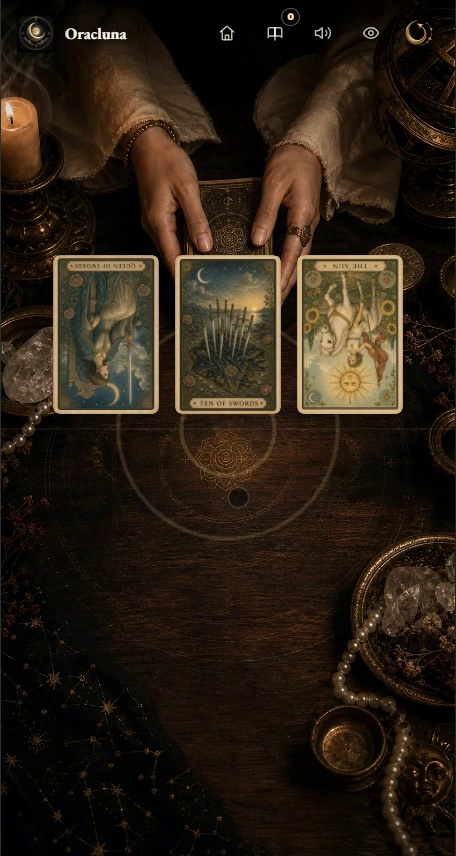
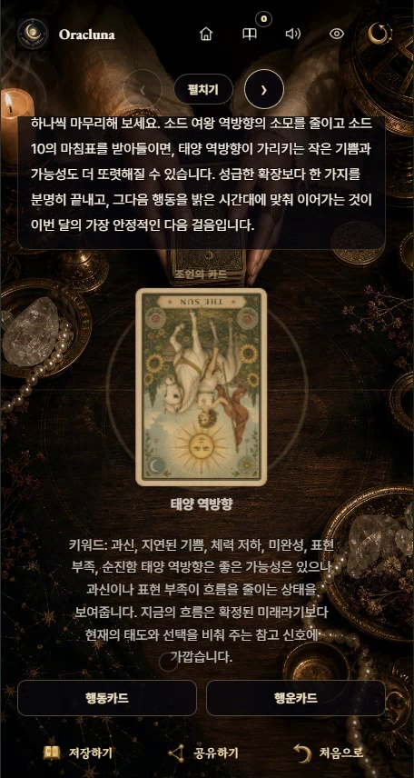

AI Systems · Kernel
Ops-Cure
orchestration stores task state, remote_codex records approvals and execution, and chat handles general dialogue.
DeskRelay, Oracluna Tarot, Ops-Cure, and GenWorld alongside Unity and manufacturing systems delivered to real sites.
The first section covers DeskRelay, Oracluna Tarot, Ops-Cure, and GenWorld + Ollama. The remaining pages cover Unity, XR, BIM, robotics, EditorWindow tooling, and manufacturing software delivered to exhibitions, factories, and construction sites.
orchestration stores task state, remote_codex records approvals and execution, and chat handles general dialogue.
Local Ollama LLM-backed NPC cognition / dialogue, designed during a Phaser 3 TS → Unity 2D C# port.
Self-host tool for checking and controlling Claude Code sessions across multiple PCs from a browser or phone.
Live mobile web app for question entry, direct selection from 78 cards, interpretation, saving, and sharing.
Quest 3 + Unity + Flask + RoboDK + in-house Jacobian IK. Doosan A0912 industrial robot live demo.
Nine Unity EditorWindow tools and an operator-facing authoring flow for LG Energy Solution content.
Custom hit engine, cross-section generation, 2D analysis viewer, and camera system — all designed in-house for the BIM runtime.
Role-based order, material, production, approval, inventory, and shipping screens for factory work.

orchestration, remote_codex, and chat store their state and events through the same Space / Actor / Event / Behavior model.

A self-host developer tool that remotes Claude Code sessions running on your own PC to a browser or mobile. A single server PC runs site-frontend, site-backend, and a connector daemon. Other PCs in the same LAN or Tailscale register as devices.
:18193), Hono + Bun backend (:18192), pc-connector-daemon (:18191 / :18091), behavior-remote-claude, Capacitor Android app, registration automation + validation report.
Ported a Phaser 3 TS-based RPG to Unity 2D C# while designing a local Ollama LLM-backed NPC cognition / dialogue system. The game uses local LLM dialogue when available and a rule-based dialogue graph when the service is offline.

At oracluna.com, users choose a concern, shuffle and cut the deck, pick from a 78-card wheel, receive an interpretation, and save or share the result.

Mood and relationship values are shown inside the game loop for debugging.

The result screen reopens saved readings and provides image sharing from the browser.

A full Quest 3 to Doosan A0912 control path through Unity, Flask, RoboDK, calibration, safety logic, and later in-house Jacobian IK ownership.

A Unity authoring environment for LG Energy Solution content with nine EditorWindow tools, mapping rules, and a cleaner runtime path for non-developer operators.
Separate from the AI cases, the industrial track was finished with the same discipline — heavy geometry, simulator delivery, manufacturing workflow design, hardware setup, and operator-facing runtime work.

A Unity BIM runtime with a custom hit engine, station-based cross-section generation, a 2D analysis viewer, and camera controls for inspecting large models.
Mobile-first role workbenches connecting orders, BOM, materials, production, approval, inventory, and shipping.
Joystick control, HMD + PC RPC multiplayer, and LeapMotion cockpit interaction for training flow.
Fall, collision, scaffold work, and 4D hardware feedback tied to safety training sequences.
Printing machine and crane accident scenarios with hardware-linked response and procedural training.
For the AI projects, I handled setup, failure states, logs, recovery, and handoff. The same checks came from ten years of delivering Unity and manufacturing software to real operators.